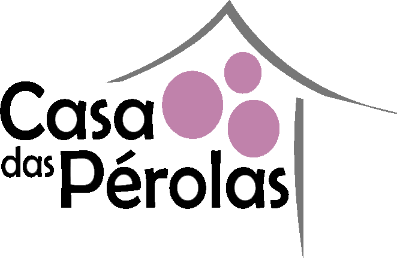
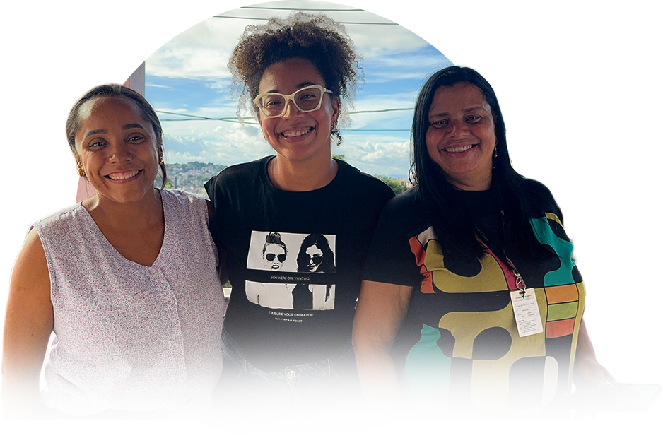

A Casa das Pérolas é um projeto social dedicado ao acolhimento, cuidado e apoio de mulheres em situação de vulnerabilidade.
A instituição caracteriza-se como uma casa de acolhimento destinada a mulheres de 18 a 59 anos e seus filhos que possuem até 17 anos, que encontram-se em situação de rua e vulnerabilidade relacionada a gênero.

O trabalho da Casa das Pérolas só é possível graças à colaboração de pessoas, voluntários e parceiros que acreditam na transformação de vidas através do cuidado e da esperança.
Sua ação ajuda a criar novas histórias e devolver formas de construir o futuro.
R. da Fraternidade, s/n - Fazenda Coutos, Salvador - BA, 40731-175